How to visualize EBSD data
This sections gives you an overview over the functionality MTEX offers to visualize spatial orientation data.
| On this page ... |
| Phase Plots |
| Visualizing arbitrary properties |
| Visualizing orientations |
| Customizing the color |
| Coloring certain fibres |
| Coloring certain orientations |
| Combining different plots |
Let us first import some EBSD data with a script file
close all; plotx2east mtexdata forsterite csFo = ebsd('Forsterite').CS
csFo = crystalSymmetry mineral : Forsterite color : light blue symmetry: mmm a, b, c : 4.8, 10, 6
By default MTEX plots a phase map for EBSD data.
plot(ebsd)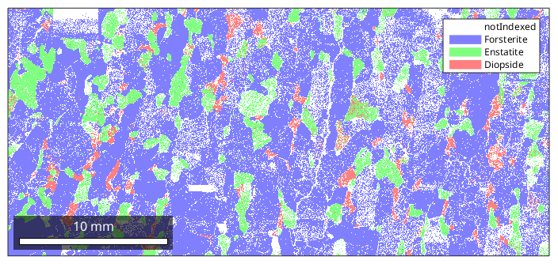
You can access the color of each phase by
ebsd('Diopside').colorans =
1.0000 0.5000 0.5000
These values are RGB values, e.g. to make the color for diopside even more red we can do
ebsd('Diopside').color = [1 0 0];
plot(ebsd)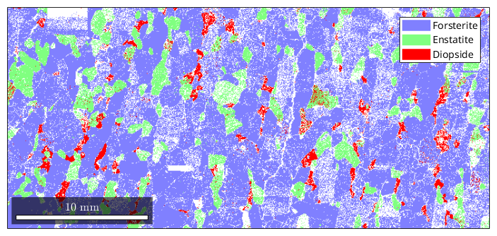 By default, not indexed phases are plotted as white. To directly specify a color for some ebsd data use the option FaceColor.
hold on plot(ebsd('notIndexed'),'FaceColor','black') hold off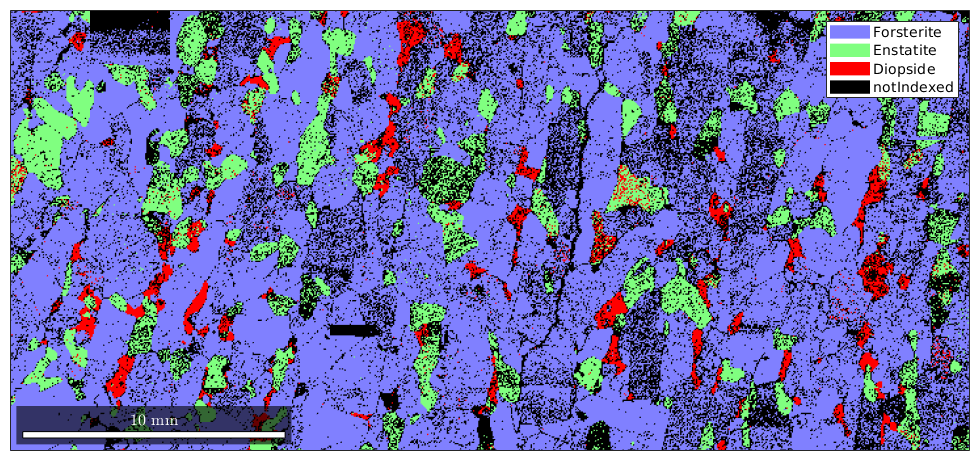
Appart from the phase information we can use any other property to colorize the EBSD data. As an example we may plot the band contrast
plot(ebsd,ebsd.bc) colormap gray % this makes the image grayscale colorbar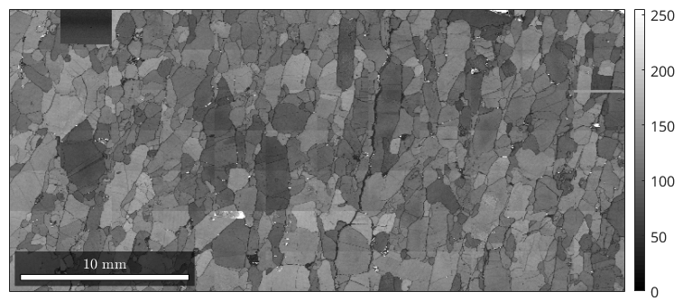
Actually, we can pass any list of numbers or colors as a second input argument to be visualized together with the ebsd data. In order to visualize orientations in an EBSD map we have first to compute a color for each orientation. The most simple way is to assign to each orientation its rotational angle. This is done by the command
plot(ebsd('Forsterite'),ebsd('Forsterite').orientations.angle./degree) colorbar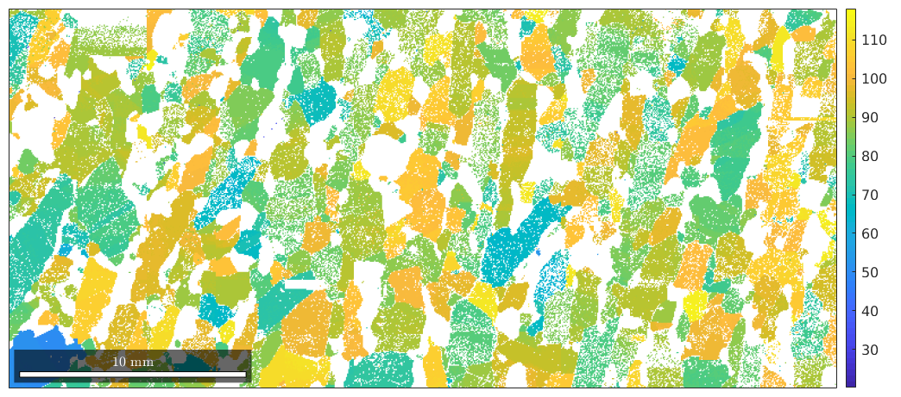
Lets make things a bit more formal. Therefore we define first a orientation mapping that assignes to each orientation its rotational angle
oM = angleOrientationMapping(ebsd('Fo'))
Hint: You might want to use the point group
"222" for colorcoding!
oM =
angleOrientationMapping with properties:
CS1: [4x2 crystalSymmetry]
CS2: [1x1 specimenSymmetry]
now the color, which is actually the rotational angle, is computed by the command
color = oM.orientation2color(ebsd('Fo').orientations);and we can visuallize it by
plot(ebsd('Forsterite'),color)
colorbar While for the previous case this seems to be unnecesarily complicated it allows us to define arbitrary complex color mapping. Consider for example the following standard color mapping that uses an colorization of the fundamental sector in the inverse pole figure to assign a color to each orientation
% this defines a color mapping for the Forsterite phase oM = ipdfHSVOrientationMapping(ebsd('Forsterite')) % this is the colored fundamental sector plot(oM)
Hint: You might want to use the point group
"222" for colorcoding!
oM =
ipdfHSVOrientationMapping with properties:
inversePoleFigureDirection: [1x1 vector3d]
CS1: [4x2 crystalSymmetry]
CS2: [1x1 specimenSymmetry]
colorPostRotation: [1x1 rotation]
colorStretching: 1
whiteCenter: [1x1 vector3d]
sR: [1x1 sphericalRegion]
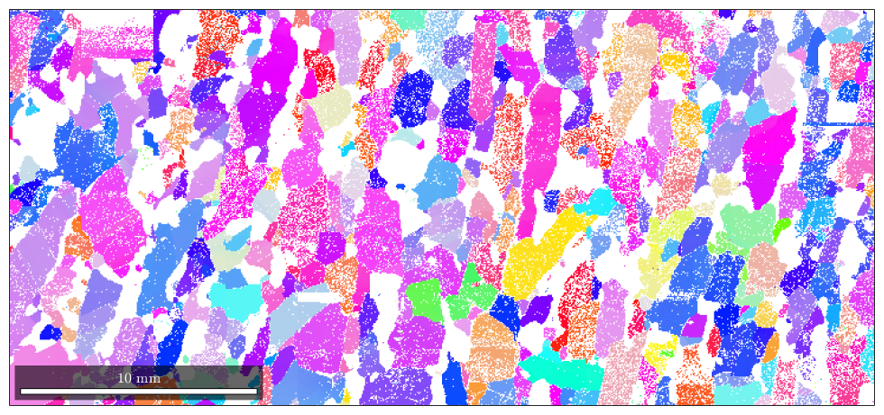 Now we can proceed as above
% compute the colors color = oM.orientation2color(ebsd('Fo').orientations); % plot the colors close all plot(ebsd('Forsterite'),color)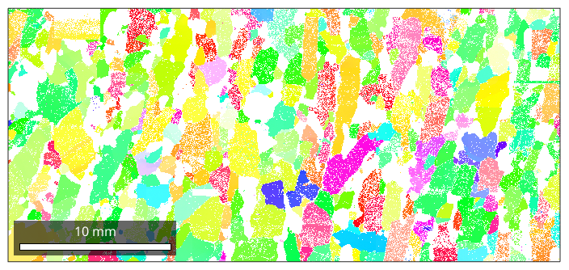
Orientation mappings usually provide several options to alter the alignment of colors. Lets give some examples
% we may interchange green and blue by setting
oM.colorPostRotation = reflection(yvector);
plot(oM)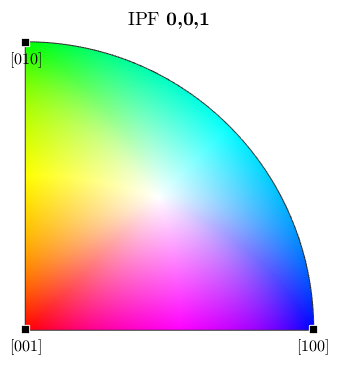 or cycle of colors red, green, blue by
oM.colorPostRotation = rotation('axis',zvector,'angle',120*degree); plot(oM)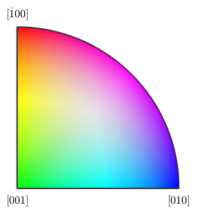
Furthermore, we can explicitly set the inverse pole figure directions by
oM.inversePoleFigureDirection = zvector; % compute the colors again color = oM.orientation2color(ebsd('Forsterite').orientations); % and plot them close all plot(ebsd('Forsterite'),color)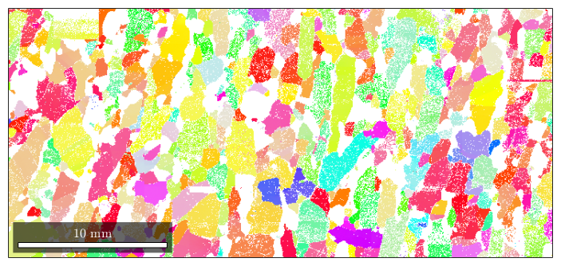
Beside the recommented orientation mapping ipdfHSVOrientationMapping MTEX supports also a lot of other color mappings as summarized below
* * * *
In some cases, it might be useful to color certain orientations after one needs. This can be done in two ways, either to color a certain fibre, or a certain orientation.
To color a fibre, one has to specify the crystal direction h together with its rgb color and the specimen direction r, which should be marked.
oM = ipdfCenterOrientationMapping(csFo); oM.inversePoleFigureDirection = zvector; oM.center = Miller(1,1,1,csFo); oM.color = [0 0 1]; oM.psi = deLaValeePoussinKernel('halfwidth',7.5*degree); plot(ebsd('fo'),oM.orientation2color(ebsd('fo').orientations))
Hint: You might want to use the point group "222" for colorcoding!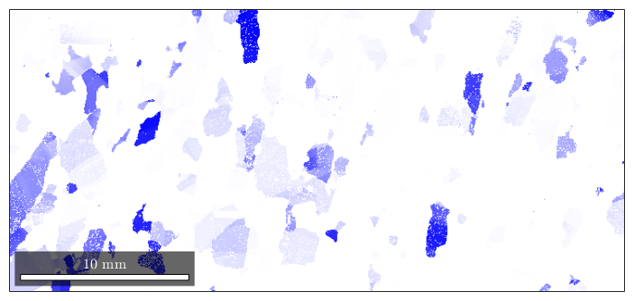
the option halfwidth controls half of the intensity of the color at a given distance. Here we have chosen the (111)[001] fibre to be drawn in blue, and at 7.5 degrees, where the blue should be only lighter.
plot(oM) hold on circle(Miller(1,1,1,csFo),15*degree,'linewidth',2)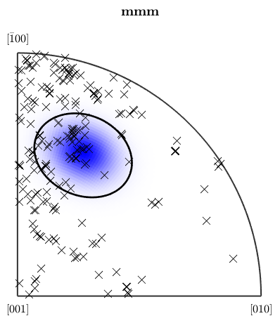
the percentage of blue colored area in the map is equivalent to the fibre volume
vol = fibreVolume(ebsd('fo').orientations,Miller(1,1,1,csFo),zvector,15*degree) plotIPDF(ebsd('fo').orientations,zvector,'markercolor','k','marker','x','points',200) hold off
vol =
0.2480
I'm plotting 200 random orientations out of 152345 given orientations
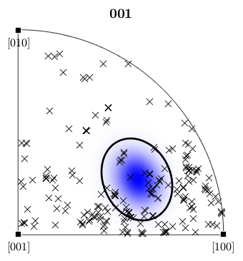 we can easily extend the colorcoding
oM.center = [Miller(0,0,1,csFo),Miller(0,1,1,csFo),Miller(1,1,1,csFo),... Miller(11,4,4,csFo), Miller(5,0,2,csFo) , Miller(5,5,2,csFo)] oM.color = [[1 0 0];[0 1 0];[0 0 1];[1 0 1];[1 1 0];[0 1 1]]; close all; plot(ebsd('fo'),oM.orientation2color(ebsd('fo').orientations))
oM =
ipdfCenterOrientationMapping with properties:
center: [1x6 Miller]
color: [0 0 1]
psi: [1x1 deLaValeePoussinKernel]
inversePoleFigureDirection: [1x1 vector3d]
CS1: [4x2 crystalSymmetry]
CS2: [1x1 specimenSymmetry]
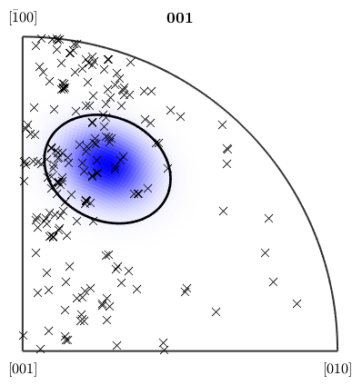 plot(oM,'complete')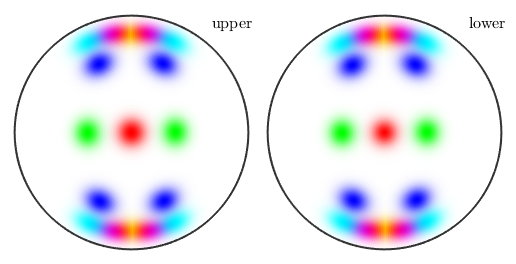
We might be interested to locate some special orientation in our orientation map. Suppose the mode of the ODF somewhere in our spatial distribution of grains (the orientation map).
mode = idquaternion
mode = Quaternion size: 1 x 1 a b c d 1 0 0 0
The definition of colors for certain orientations is carried out similarly as in the case of fibres
oM = centerOrientationMapping(ebsd('Fo')); oM.center = mean(ebsd('Forsterite')); oM.color = [0,0,1]; oM.psi = deLaValeePoussinKernel('halfwidth',20*degree); plot(ebsd('fo'),oM.orientation2color(ebsd('fo').orientations)) % and the correspoding colormap figure(2) plot(oM,'sections',9,'sigma')
Hint: You might want to use the point group "222" for colorcoding! Plotting colormap as sigma sections, range: 0° - 160°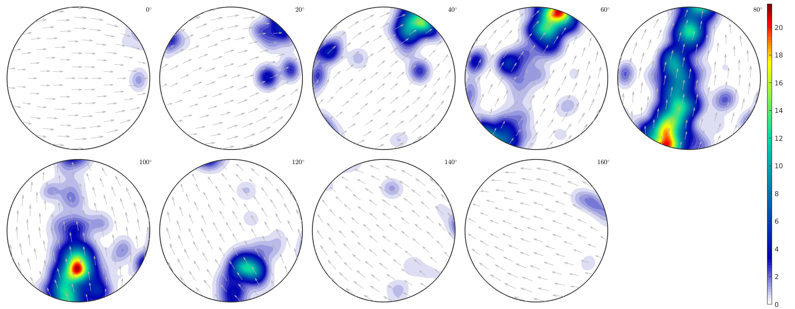
the area of the colored EBSD data in the map corresponds to the volume portion (in percent)
vol = 100 * volume(ebsd('fo').orientations,oM.center,20*degree)vol = 15.2640
actually, the colored measurements stress a peak in the ODF
close all odf = calcODF(ebsd('fo').orientations,'halfwidth',10*degree,'silent'); plot(odf,'sections',9,'antipodal','silent','sigma') colorbar
Plotting ODF as sigma sections, range: 0° - 160°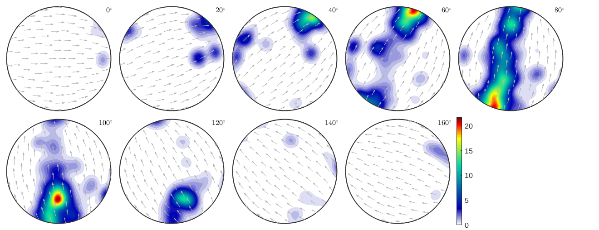
Combining different plots can be done either by plotting only subsets of the ebsd data, or via the option 'translucent'. Note that the option 'translucent' requires the renderer of the figure to be set to 'opengl'.
close all; plot(ebsd,ebsd.bc) mtexColorMap white2black oM = ipdfCenterOrientationMapping(csFo); oM.inversePoleFigureDirection = zvector; oM.center = Miller(1,1,1,csFo); oM.color = [0 0 1]; oM.psi = deLaValeePoussinKernel('halfwidth',7.5*degree); hold on plot(ebsd('fo'),oM.orientation2color(ebsd('fo').orientations),'FaceAlpha',0.5) hold off
Hint: You might want to use the point group "222" for colorcoding!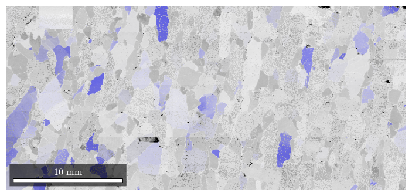
another example
close all; plot(ebsd,ebsd.bc) mtexColorMap black2white hold on plot(ebsd('fo'),'FaceAlpha',0.5) hold off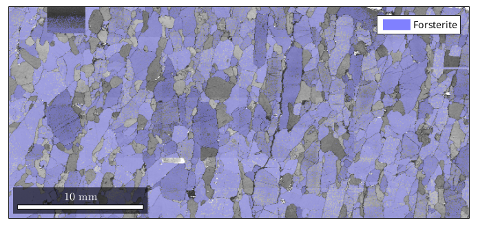
| DocHelp 0.1 beta |